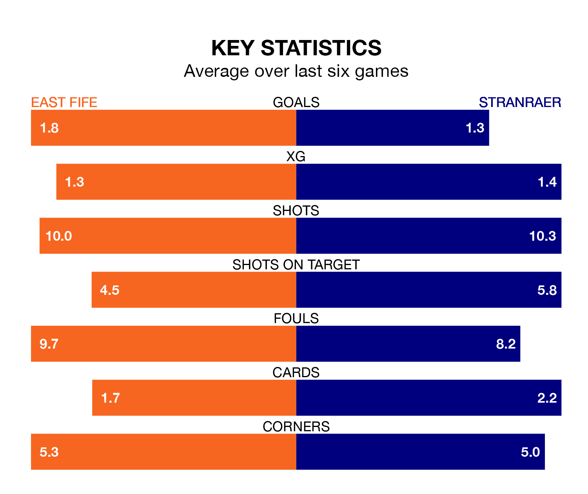

East Fife face Stranraer on Saturday seeking to protect their long unbeaten run in League Two.
The Fifers are unbeaten in six, with three wins and three draws, ahead of the 3pm kick-off.
They face a Stranraer team who have won just one and drawn one over the same number of games.
Stranraer are ninth in the table after 29 games, of which they have won eight and drawn six, earning 30 points.
East Fife are four places ahead of the visitors in fifth, with nine wins and 10 draws putting them on 37 points.
In the last 10 years, East Fife and Stranraer have played each other on 24 occasions. East Fife won 10 of them, Stranraer six, and they drew eight times.
On average, the Fifers scored 1.9 goals and Stranraer 1.2 in those matches.
Their last meeting was on January 27, when East Fife won 1-0 away.
In Nathan Austin, the Fifers have one of the league's most on-form strikers so far this season. He has notched 13 goals in 28 appearances, to sit third in the scoring charts.
His goal rate of one every 172 minutes is quicker than that of Thomas Orr, Stranraer's top scorer with a goal every 245 minutes, and a total of five goals in 23 games.
With 34 goals in 29 games so far this season, Stranraer are the league's third-lowest scorers with 1.2 goals per game. And they are conceding more than average, letting in 47 goals at a rate of 1.6 per game.
The home team, meanwhile, are average scorers, with 1.3 goals per game. They have also conceded 1.3 goals per game.
East Fife's last match was on March 16, a 1-1 draw against Peterhead, with Alan Trouten getting the goal for the Fifers.
Stranraer lost 2-1 against Elgin City last time out, also on March 16, with Mark Gallagher on the scoresheet.
Updated: 10:19 (UTC), 22/03/24